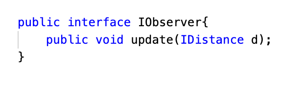

Si desidera realizzare una versione osservabile (SonarObservable) del dispositivo Sonar introdotto
in il Sonar che soddisfi i seguenti requisiti:
il SonarObservable deve inviare informazioni a tutti componenti software interessati alla
rilevazione dei valori di distanza;
il SonarObservable deve fornire valori di distanza solo quando questi si modificano in modo
significativo;
i componenti interessati ai valori di distanza prodotti dal SonarObservable sono denominati Observer
e pssono risiedere sullo stesso nodo del SonarObservable (cioè sul RaspberryPi) o su un nodo remoto
(ad esempio sul PC);
il funzionamento del SonarObservable deve essere testato in modo automatizzato ponendo un ostaco
lo a distanza fissa DTESTING1 davanti ad esso, controllando che tutti gli Observers ricevano il valore
DTESTING1. Dopo un qualche tempo, si modifica la posizione dell’ostacolo a una nuova distanza
DTESTING2 e si controlla che gli tutti gli Observers ricevano il valore DTESTING2.
Requirement analysis
L'interazione con il committente ha chiarito il significato dei seguenti aspetti:
modifica significativa: il valore rilevato dal Sonar è maggiore o minore del valore
precedente più o meno una quantità "X" costantente, cioè il valore rilevato si trova
al di fuori dell'intorno "X" del valore precedente.
Problem analysis
Problematiche Rilevate
L'analisi delle problematiche mette alla luce la necessità di costruire una versione osservabile del Sonar,
cioè fornire un'implementazione del Sonar che rispetti i criteri del Pattern Observer.
A tal proposito, poichè il Sonar è un dispositivo di misura che produce valori di distanza,
si potrebbe pensare di rendere osservabile il Sonar inteso come dispositivo, oppure
rendere osservabili i valori prodotti dal Sonar.
Tale problematica, quindi, può essere affrontata con due
differenti approcci:
Metodo 1: Costruire un Sonar osservabile che notifichi i suoi Observer ogni qual volta
avvenga un cambiamento del suo stato interno (carica delle batterie, temperatura interna, rate di generazione dei dati, etc.).
Metodo 2: Costruire un Sonar osservabile che notifichi gli Observer ogni qual avvenga una
modifica significativa dei valori generati dal funzionamento del Sonar.
Come analista, sulla base del primo requisito (il SonarObservable deve inviare informazioni a tutti
componenti software interessati alla rilevazione dei valori di distanza) e considerando che i
valori di distanza rilevati dal Sonar non rappresentano unà proprità del dispositivo, cioè non
sono caratteristiche del suo stato interno, bensì rappresentino un valore generato dal Sonar,
ritengo che sia opportuno procedere allo sviluppo del SonarObservable seguendo
l'approccio del Metodo 2.
Al fine di formalizzare tale approccio è necessario definire un contratto tra gli attori in gioco, ciò
si traduce nella definizione delle due interfacce seguenti.

L'interfaccia ISonarObservable definisce i metodi per aggiungere o rimuovere degli Observer, e il
metodo notify con il quale notifica agli osservatori il nuovo valore di distanza,
IDistance, misurato.
L'interfaccia IObserver definisce un unico metodo che il SonoarObservable invoca per comunicare il
nuovo valore di IDistance agli Observer.
Architettura logica
Un primo modello di architettura logica potrebbe essere quello raffigurato di seguito:
Test plans
Project
Testing
Deployment
Maintenance
By Enrico Valastro email: enrico.valastro@studio.unibo.it